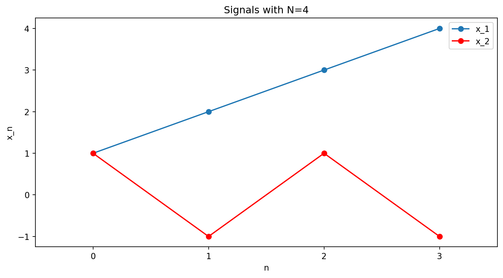
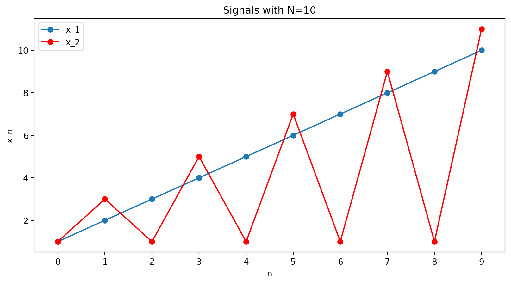
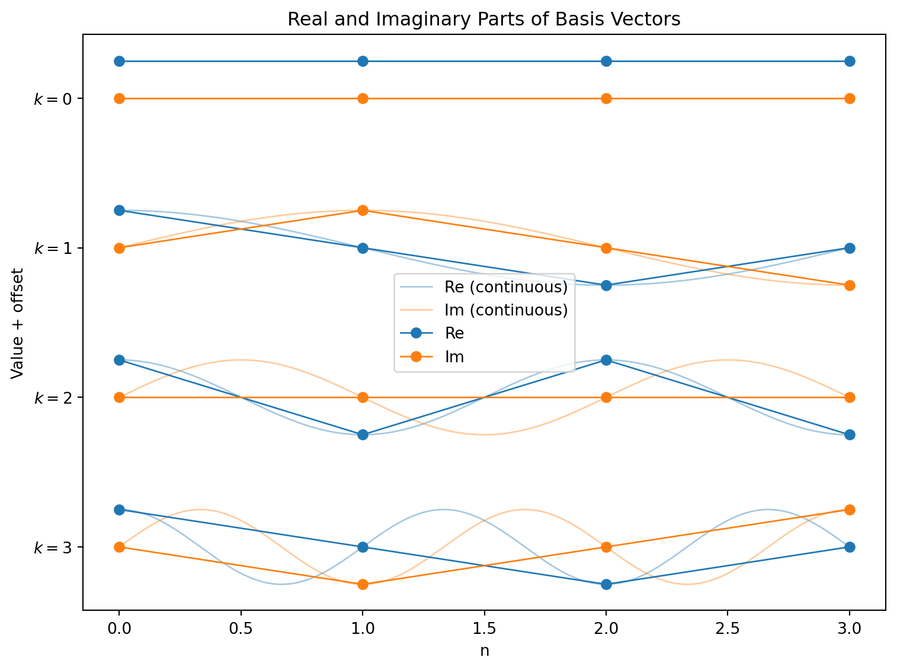
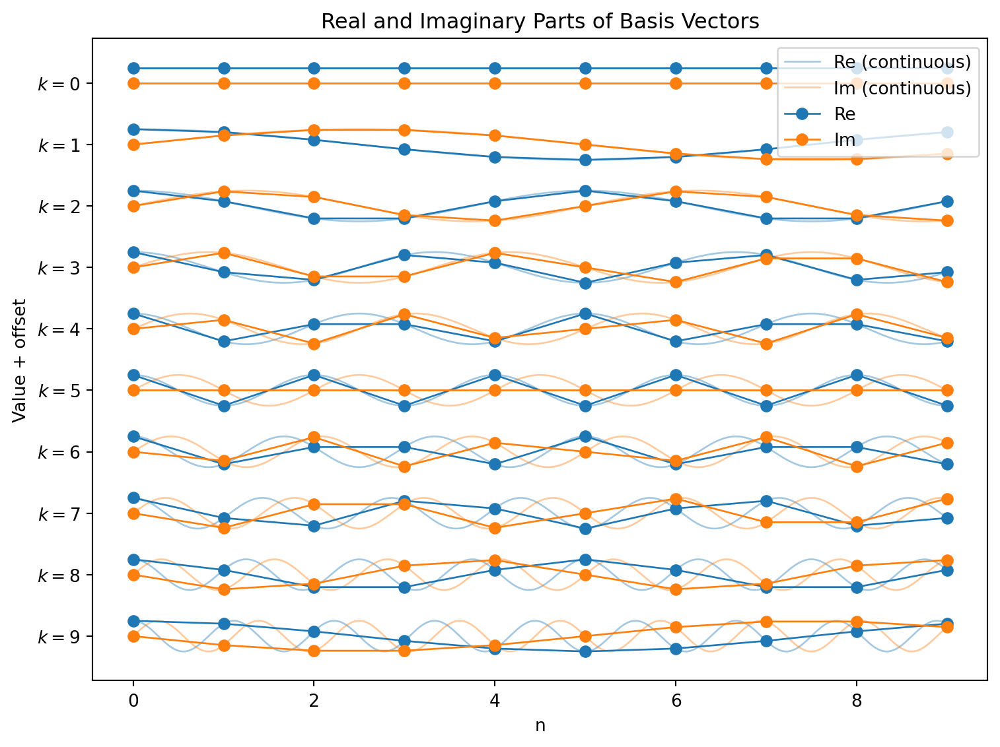
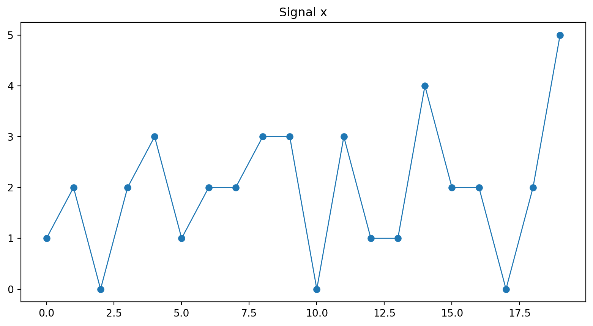
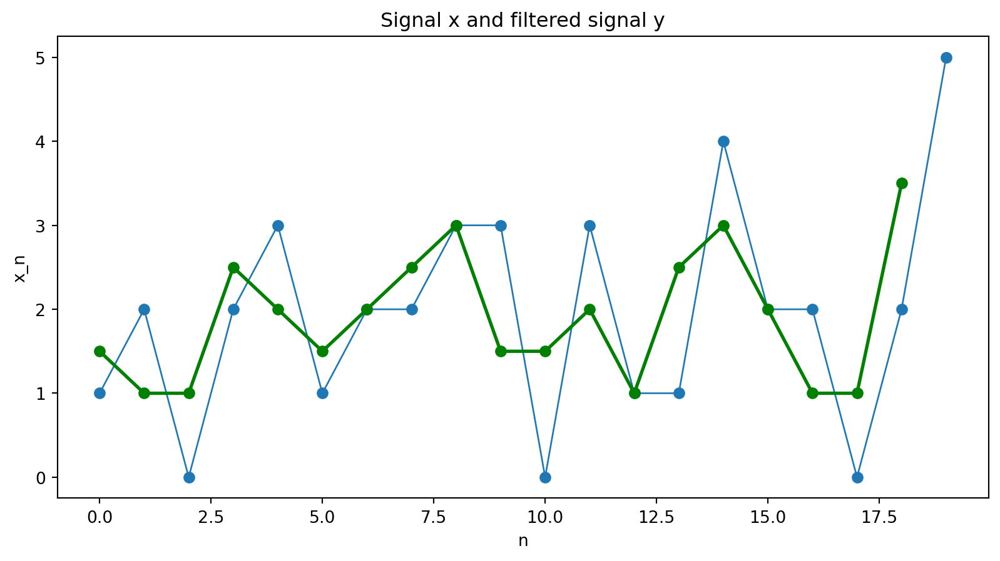

The Discrete Fourier Transform and Simple Filtering
Big Picture
We have been thinking about data as vectors, and about changing coordinates to understand structure.
In SVD, we chose a basis adapted to the data.
In PCA, we interpreted those coordinates in terms of variance. Today, we choose a fixed basis that is good for signals.
The Discrete Fourier Transform (DFT) is just a change of coordinates.
Filtering becomes simple in those coordinates.
Signals as Vectors
A discrete signal of length N is just a vector
x = (x_0, x_1, \dots, x_{N-1})^T \in \mathbb{C}^N.
We can think of each point x_n as a sample from a presumably continuous signal.
Examples: for N=4, x_1 = [1,2,3,4], \quad x_2 = [1,-1,1,-1].
Or for N=10, x = [1,2,3,4,5,6,7,8,9,10], \quad x = [1,3,1,5,1,7,1,9,1,11].

Discrete Fourier Transform
Fourier series
The Fourier series of a continuous function f(t) is an expansion into sines and cosines:
f(t)=a_{0}+a_{1} \cos t+b_{1} \sin t+a_{2} \cos 2 t+b_{2} \sin 2 t+\cdots
Euler’s formula tells us that the complex exponential e^{i t} is a combination of \cos t and \sin t:
e^{i t}=\cos t+i \sin t
So we can rewrite the Fourier series using complex exponentials:
f(t)=c_{0}+c_{1} e^{i t}+c_{2} e^{2 i t}+\cdots = \sum_k c_k\cdot e^{i k t}
The coefficients c_{0}, c_{1}, c_{2}, \ldots are related to the a’s and b’s.
For example, c_{1}=a_{1}-i b_{1}.
Discrete signals
But here we are interested in discrete signals. To connect with the notation from earlier in the lecture, instead of f(t), we have f[n]=x_n for n = 0,1,\dots,N-1.
In this case, we have basis vectors
f_k[n] = e^{i 2\pi kn/N}, \quad \text{for } n = 0,1,\dots,N-1.
These are continuous complex exponentials (cosines and sines), but sampled at N points.
We will have one basis vector, or Fourier mode, for each frequency index k = 0,1,\dots,N-1.
The frequency index k is the number of times the underlying continuous oscillation fits into N samples.
These vectors form an orthogonal basis of \mathbb{C}^N.
So every signal can be written as a combination of oscillations.
The Fourier basis vector or mode \mathbf{f}_k is given by \mathbf{f}_k = \begin{bmatrix} e^{i 2\pi k \cdot 0/N} \\ e^{i 2\pi k \cdot 1/N} \\ \vdots \\ e^{i 2\pi k \cdot (N-1)/N} \end{bmatrix}.
Each mode \mathbf{f}_k traces one of the possible discrete oscillations.
- k=0 → constant signal
- small k → slow oscillation
- large k → rapid oscillation
- k=N/2 → fastest oscillation, N/2 cycles in N samples
- k larger than N/2 → oscillation actually slower (will describe with pictures)
Visualizing the Fourier basis vectors
Let’s look at these basis vectors for N=4:

The four vectors given by the blue (real) and orange (imaginary) points form a basis of \mathbb{C}^4:
\displaystyle \left[\begin{matrix}1 & 1 & 1 & 1\\1 & i & -1 & - i\\1 & -1 & 1 & -1\\1 & - i & -1 & i\end{matrix}\right]
(Each column k of this matrix is \mathbf{f}_k, the k-th basis vector.)
For N=10
Let’s look at these basis vectors for N=4:

Expressing a signal
OK, now we are back in familiar territory!
We have a basis of vectors, and we can express any signal as a combination of these vectors just by finding the projections onto each of them.
So if we have a signal \mathbf{x} = [x_0, x_1, \dots, x_{N-1}], we can find the coefficients (call them X_k) by taking the dot product of \mathbf{x} with \mathbf{f}_k:
X_k = \mathbf{x} \cdot \mathbf{f}_k = \sum_{n=0}^{N-1} x_n e^{-i 2\pi kn/N}.
This is the Discrete Fourier Transform (DFT)!
DFT measures frequency content
The DFT gives the coordinates of \mathbf{x} in an oscillatory basis
Conceptually:
X_k measures “how much frequency k is present.”
The DFT is just a coordinate change.
Inverse DFT
The inverse DFT reconstructs the signal, given the coefficients X_k:
x_n = \frac{1}{N} \sum_{k=0}^{N-1} X_k e^{i 2\pi kn/N}.
Relationship to the Fourier series
For continuous functions, we can find the coefficients by integrating:
c_{k}=\int_{0}^{2 \pi} f(t) e^{-i k t} d t
This is equivalent to taking the projection of f(t) onto the basis function e^{i k t}.
Here instead we have
X_k = \mathbf{x} \cdot \mathbf{f}_k = \sum_{n=0}^{N-1} x_n e^{-i 2\pi kn/N}.
We do summation instead of integration because both our signal and our basis functions are discrete.
Example: Computing a Small DFT by Hand (N=4)
Computing a Small DFT by Hand (N=4)
Let’s find the DFT of the signal \mathbf{x} = [1,-1,1,-1].
We define a constant just to make the algebra less messy.
When N=4, let
W = e^{-i 2\pi/4} = -i.
So the formula for the DFT becomes
X_k = \sum_{n=0}^{3} x_n W^{kn}.
Note that the powers of W cycle:
W^0 = 1, \quad W^1 = -i, \quad W^2 = -1, \quad W^3 = i \quad \text{and then we wrap to} \quad W^4 = 1, \quad W^5 = -i, \quad \text{and so on.}
\mathbf{x} = [1,-1,1,-1], \ \quad X_k = \sum_{n=0}^{3} x_n W^{kn}.
W^0 = 1, \quad W^1 = -i, \quad W^2 = -1, \quad W^3 = i.
So for X_0, we have
X_0 = x_0 W^{0\cdot 0} + x_1 W^{0\cdot 1} + x_2 W^{0\cdot 2} + x_3 W^{0\cdot 3}
= 1 \cdot 1 + (-1) \cdot 1 + 1 \cdot 1 + (-1) \cdot 1 = 0. . . .
X_1:
\begin{aligned} X_1 &= x_0 W^{1\cdot 0} + x_1 W^{1\cdot 1} + x_2 W^{1\cdot 2} + x_3 W^{1\cdot 3} \\ &= 1 \cdot 1 + (-1) \cdot (-i) + 1 \cdot (-1) + (-1) \cdot i \\ &= 1 + i - 1 - i = 0. \end{aligned}
Also zero!
X_2:
\begin{aligned} X_2 &= x_0 W^{2\cdot 0} + x_1 W^{2\cdot 1} + x_2 W^{2\cdot 2} + x_3 W^{2\cdot 3} \\ &= 1 \cdot 1 + (-1) \cdot (-1) + 1 \cdot 1 + (-1) \cdot (-1) \\ &= 4. \end{aligned}
This one is non-zero!
Finally, for X_3:
\begin{aligned} X_3 &= x_0 W^{3\cdot 0} + x_1 W^{3\cdot 1} + x_2 W^{3\cdot 2} + x_3 W^{3\cdot 3} \\ &= 1 \cdot 1 + (-1) \cdot i + 1 \cdot (-1) + (-1) \cdot (-i) \\ &= 0. \end{aligned}
Zero again.
Putting these together, we get
X = [0,0,4,0].
x = [1,-1,1,-1], \quad X = [0,0,4,0].
Interpretation:
All the energy is a in the mode k=2.

This signal alternates every sample point — it is the highest possible frequency for N=4.
Filters on Discrete Signals
Filters on Signals
We’ve seen filters before. They are simply linear transformations that modify the signal, acting as they slide along the signal.
For instance, we looked at a filter that took a weighted average of three adjacent points in the signal. The output point was given by y_n = \tfrac12(\tfrac12 x_{n-2} + x_{n-1} + \tfrac12 x_{n}).
(Here we only use points at n and to its left, which is a common convention in signal processing.)
Filter notation
y_n = \tfrac12(\tfrac12 x_{n-2} + x_{n-1} + \tfrac12 x_{n}).
We write this filter as h = \tfrac12([\tfrac12, 1, \tfrac12]).
h is a vector of coefficients, describing the effect of the filter at each point in the sliding window.
The transformation of applying the filter h to a signal \mathbf{x} is written as \mathcal{F}_h:
\mathbf{y} = \mathcal{F}_h(\mathbf{x}).
(This is not a standardized notation, just one I picked for this lecture.)
Example: Simple 2-point filter
Here, we are going to look at an even simpler filter, which will just take the average of two adjacent points: x_{n-1} and x_n.
y_n = \tfrac12 (x_{n-1} + x_{n})
Filtering as matrix multiplication
If we know the length of the signal, we can write the filter as a matrix multiplication.
One small gotcha: we need to decide what to do with the points at the edges of the signal. Here we will assume that the signal wraps around, so x_{-1} = x_5.
For our filter h = \tfrac12([\tfrac12, 1]), we have
\mathbf{y} = \frac{1}{2} \begin{bmatrix} 1 & 0 & 0 & 0 & 0 & 1 \\ 1 & 1 & 0 & 0 & 0 & 0 \\ 0 & 1 & 1 & 0 & 0 & 0 \\ 0 & 0 & 1 & 1 & 0 & 0 \\ 0 & 0 & 0 & 1 & 1 & 0 \\ 0 & 0 & 0 & 0 & 1 & 1 \end{bmatrix} \mathbf{x}.
Side note: making the filter longer
y_n = \tfrac12 (x_{n-1} + x_{n})
I am going to write down a longer filter, which has the exact same effect as this filter. (This is just going to be useful in the next slide or two!)
Here it is:
y_n = 0 x_{n-4} + 0 x_{n-3} + 0 x_{n-2} + \tfrac12 x_{n-1} + \tfrac12 x_{n}
In other words, we have h = [\tfrac12, \tfrac12, 0, 0, 0].
The only reason I did this is that we are about to work with sums, and it’s a bit confusing to have a sum of only length 2.
A compact way to describe the filter’s action
y_n = 0 x_{n-4} + 0 x_{n-3} + 0 x_{n-2} + \tfrac12 x_{n-1} + \tfrac12 x_{n}; \quad h = [0, 0, 0, \tfrac12, \tfrac12].
Rewriting:
y_n = h_5 x_{n-5} + h_4 x_{n-4} + h_3 x_{n-3} + h_2 x_{n-2} + h_1 x_{n-1} + h_0 x_{n}= \sum_{m=0}^{L-1} h_m x_{n-m}.
This now is the definition of how a filter acts on a signal:
y_n = \sum_{m=0}^{L-1} h_m x_{n-m}.
Filtering as convolution
y_n = \sum_{m=0}^{L-1} h_m x_{n-m}.
This is actually a mathematical operation called convolution.
When we take the convolution of \mathbf{x} with \mathbf{h}, it is defined as: \mathbf{y} = \mathbf{x} \circledast \mathbf{h} \implies y_n = \sum_{m=0}^{L-1} h_m x_{n-m}.
This means that the filter transformation is actually a convolution:
\mathcal{F}_h(\mathbf{x}) = \mathbf{x} \circledast \mathbf{h}.
So we can specify a filter by a vector \mathbf{h} = [h_0, h_1, \dots, h_{L-1}], and apply it to a signal \mathbf{x} by convolving them.
Summary so far
Signals: - We write a signal \mathbf{x} as a vector of samples: \mathbf{x} = [x_0, x_1, \dots, x_{N-1}].
- We can express this signal as a weighted sum of Fourier modes: \mathbf{x} = \sum_{k=0}^{N-1} X_k \mathbf{f}_k, where each Fourier mode is given by \mathbf{f}_k[n] = e^{i 2\pi k n/N}.
Filters: - We can specify a filter by a vector \mathbf{h} = [h_0, h_1, \dots, h_{L-1}]
The filter’s action on a signal \mathbf{x} is given by the formula y_n = \sum_{m=0}^{L-1} h_m x_{n-m}.
More compactly, we can write the filter’s action as a convolution: \mathbf{y} =\mathcal{F}_h(\mathbf{x}) = \mathbf{x} \circledast \mathbf{h}.
Understanding the effects of filters
Understanding the effects of filters
Can we characterize the effects of a given filter?
We might start by looking at what the filter does to an example signal.
A warning: This is not going to be the approach we will end up with!
Our filter: h = [\tfrac12, \tfrac12]
An example signal:
Let’s use a sample signal of length 20:
[1 2 0 2 3 1 2 2 3 3 0 3 1 1 4 2 2 0 2 5]
Then we apply the filter h = [\tfrac12, \tfrac12].

y_n = \sum_{m=0}^{1} h_m x_{n-m} = \tfrac12 x_{n-1} + \tfrac12 x_{n}
Hmm. It’s actually kind of hard to see what the filter is doing to this signal. . . .
But can we be more systematic about this?
Finding a special basis for signals
We understood the actions of matrix multiplication by finding vectors which behaved simply under the multiplication.
A \mathbf{v} = \lambda \mathbf{v}
These were, of course, the eigenvectors of A.
Then if made a basis out of those eigenvectors, we could understand the action of A on any vector \mathbf{x} by expressing \mathbf{x} in this basis.
Can we find something equivalent for signals and filters? That is, will there be a basis of signals where the action of a filter is made simple?
The answer is yes! And the basis we want will be none other than the DFT basis.
What Does a Filter Do to a Fourier Mode?
Let us take as our \mathbf{x} one of the Fourier modes, basis vectors of the DFT, f_k[n]=e^{i 2\pi kn/N}.
For simplicity, define \zeta_k = 2\pi k/N. Then
f_k[n] = e^{i \zeta_k n}.
What happens when we apply the filter h = [\tfrac12, \tfrac12] to this signal?
We use convolution to see what happens when we apply the filter to the k-th Fourier mode:
\mathbf{y}_k = \mathcal{F}_h(f_k) = f_k \circledast h.
y_k[n] = \sum_{m=0}^{L-1} h_m f_k[n-m]= \sum_{m=0}^{L-1} h_m e^{i \zeta_k (n-m)} = \left( \sum_{m=0}^{L-1} h_m e^{-i \zeta_k m} \right) e^{i \zeta_k n}.
Simplifying the expression
y_k[n] = \sum_{m=0}^{L-1} h_m f_k[n-m]= \sum_{m=0}^{L-1} h_m e^{i \zeta_k (n-m)} = \left( \sum_{m=0}^{L-1} h_m e^{-i \zeta_k m} \right) e^{i \zeta_k n}.
But wait. This simplifies!
The part inside the parentheses is just a constant, and it doesn’t depend at all on n. Let’s just give it a name, H(\zeta_k).
H(\zeta_k) \equiv \sum_{m=0}^{L-1} h_m e^{-i \zeta_k m}.
So
y_k[n] = H(\zeta_k) f_k[n].
This holds at every point n, so we can write it in vector form as
\mathbf{y}_k = H(\zeta_k) \mathbf{f}_k.
This means that if our input is one of the Fourier modes, the output is simply the input scaled by H(\zeta_k).
The Fourier modes are the eigenvectors of the filter!
Fourier modes as eigenvectors
\mathbf{y}_k = H(\zeta_k) \mathbf{f}_k; \quad H(\zeta_k) = \sum_{m=0}^{L-1} h_m e^{-i \zeta_k m} \quad \text{for} \quad k = 0,1,\dots,N-1.
This derivation didn’t depend on the form of the filter h.
That means that the Fourier modes are the eigenvectors of every filter that we can write as a convolution!
Behavior on any signal
We can now use the DFT to understand the behavior of a filter on any signal.
Remember, if we have a signal \mathbf{x}, we can write it as a weighted sum of the DFT basis vectors:
\mathbf{x} = \frac{1}{N} \sum_{k=0}^{N-1} X_k \mathbf{f}_k.
Since our filter is linear, we can apply it to each of the terms in this sum separately:
\mathcal{F}_h(\mathbf{x}) = \mathcal{F}_h\left( \frac{1}{N} \sum_{k=0}^{N-1} X_k \mathbf{f}_k \right) = \frac{1}{N} \sum_{k=0}^{N-1} \mathcal{F}_h(X_k\mathbf{f}_k)
\mathcal{F}_h(\mathbf{x}) = \frac{1}{N} \sum_{k=0}^{N-1} \mathcal{F}_h(X_k\mathbf{f}_k)
Since X_k is a constant, we can factor it out of the transformation:
= \frac{1}{N} \sum_{k=0}^{N-1} X_k \mathcal{F}_h(\mathbf{f}_k)
Now we can use the fact that the Fourier modes are the eigenvectors of the filter, so \mathcal{F}_h(\mathbf{f}_k) = H(\zeta_k) \mathbf{f}_k, to write:
\mathcal{F}_h(\mathbf{x}) = \frac{1}{N} \sum_{k=0}^{N-1} X_k H(\zeta_k) \mathbf{f}_k = \frac{1}{N} \sum_{k=0}^{N-1} H(\zeta_k) X_k \mathbf{f}_k
So we can describe the action of the filter: it takes each Fourier mode k and scales it by H(\zeta_k).
\mathcal{F}_h(\mathbf{x}) = \frac{1}{N} \sum_{k=0}^{N-1} X_k H(\zeta_k) \mathbf{f}_k = \frac{1}{N} \sum_{k=0}^{N-1} H(\zeta_k) X_k \mathbf{f}_k
Steps to understanding what a filter does to a signal of length N:
- Find the DFT of the signal. This will decompose the signal into a weighted sum of N Fourier modes \mathbf{f}_k, with weights X_k.
- For each k, compute H(\zeta_k) for the filter h.
- Multiply each Fourier mode \mathbf{f}_k by X_k and H(\zeta_k) and sum the results to get the output.
Interpretation:
- The filter scales each Fourier mode by a complex number.
What does it mean to scale a mode by a complex number? We will look at an example to understand.
Analyzing two simple filters
Lowpass: Moving Average
h = \left[\tfrac12, \tfrac12\right].
Then we calculate the frequency response using the formula we derived:
H(\zeta) = \sum_{m=0}^{L-1} h_m e^{-i \zeta m} = \tfrac12(e^0 + e^{-i\zeta})=\tfrac12(1 + e^{-i\zeta}).
Interlude: Complex Exponentials
Our frequency response is:
H(\zeta) =\tfrac12(1 + e^{-i\zeta}).
Let’s pause here. We will get something like this for every filter we analyze – something that’s a sum of complex exponentials.
Complex exponentials are vectors in the complex plane, and they have magnitude and angles (or phases).
For our purposes here, we want to be able to find the magnitudes. And in general this is a bit complicated!
Sometimes, there are simple trigenometric identities that can help. We will use one on the next slide.
But often, we only end up wanting to know the magnitude for certain values of \zeta like 0 and \pi – and this turns out to simplify things even more!
H(\zeta) =\tfrac12(1 + e^{-i\zeta}).
We factor out e^{-i\zeta/2}:
H(\zeta) = \tfrac12 e^{-i\zeta/2} \left( e^{i\zeta/2} + e^{-i\zeta/2} \right).
H(\zeta) = \tfrac12 e^{-i\zeta/2} \left( e^{i\zeta/2} + e^{-i\zeta/2} \right).
Recall Euler’s identity:
e^{i\theta} + e^{-i\theta} = 2\cos(\theta).
Apply this with \theta = \zeta/2:
e^{i\zeta/2} + e^{-i\zeta/2} = 2\cos(\zeta/2).
So
H(\zeta) = \tfrac12 e^{-i\zeta/2} \left( 2\cos(\zeta/2) \right)=e^{-i\zeta/2}\cos(\zeta/2).
Finding the Magnitude
H(\zeta) = e^{-i\zeta/2} \cos(\zeta/2).
Now we clearly see two pieces:
- A phase, which is a complex number of magnitude 1: e^{-i\zeta/2}
(Every single complex exponential of the form e^{i\theta} has magnitude 1. Sums of complex exponentials don’t necessarily have magnitude 1, though!)
- A scaling factor or gain, which is a real number: \cos(\zeta/2)
Notice that the gain is just the magnitude of the complex number H(\zeta):
|H(\zeta)| = \cos(\zeta/2).
Writing the frequency response in terms of k
Remembering our definition of \zeta_k = 2\pi k/N, we have
Phase shift: e^{-i\zeta_k/2}=e^{-i \pi k/N}.
Gain: \cos(\zeta_k/2)=\cos(\pi k/N).
The action of the filter on a Fourier mode k is to shift the phase by e^{-i\pi k/N} and to scale the amplitude by \cos(\pi k/N).
Checking the Endpoints
|H(\zeta_k)| = |\cos(\pi k/N)|.
Let’s understand what the filter does at the lowest possible frequency and at the highest possible frequency.
At the lowest frequency, k=0:
|H(0)| = |\cos(0)| = 1.
At the highest frequency (e.g. k = N/2 when N is even), \zeta = \pi:
|H(\pi)| = |\cos(\pi/2)| = 0.
So:
Slow oscillations (small k) pass through.
Rapid oscillations (near k=N/2) are suppressed.
That’s exactly what a lowpass filter does.
Highpass: Difference Filter
Let’s go through the same process for a highpass filter.
h = \left[-\tfrac12, \tfrac12\right].
Then H(\zeta) = -\tfrac12 + \tfrac12 e^{-i\zeta}.
Rewrite:
H(\zeta) = e^{-i\zeta/2}(-i \sin(\zeta/2)).
Find the magnitude of the frequency response:
|H(\zeta)| = |\sin(\zeta/2)|.
|H(\zeta)| = |\sin(\zeta/2)|.
Check high and low frequencies:
|H(0)| = 0, \qquad |H(\pi)| = 1.
Low frequencies are suppressed. Rapid changes are emphasized.
This is a highpass filter.
Final Conceptual Summary
The DFT is just a coordinate change:
Time domain → frequency domain.
Convolution → multiplication.
Filtering → scaling oscillations.
For the homework, you only need:
X_k = \sum_{n=0}^{N-1} x_n e^{-i 2\pi kn/N},
H(\zeta) = \sum_{m=0}^{L-1} h_m e^{-i \zeta m},
and the idea that filters act differently on different frequencies.
Everything else is interpretation.